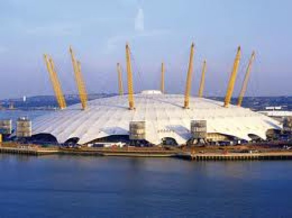
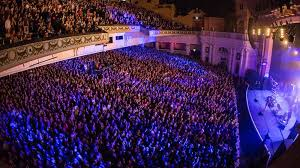
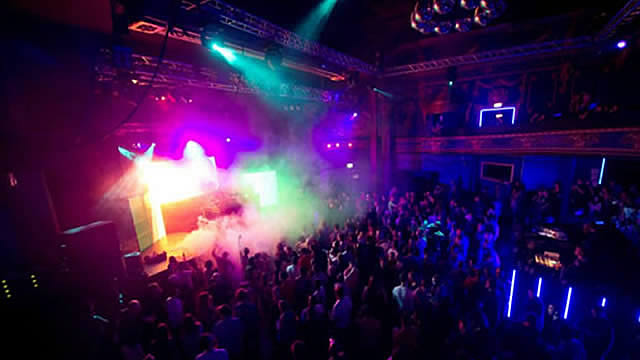

The 02 Arena
The 02 arena is a multipurpose indoor arena based in North Greenwich it has the second highest indoor seating
capacity in the United Kingdom and largest in London. It is now the world busiest music arena. It has direct travel from London tube jubilee line which you access from London Bridge and Stratford station.
Musical concerts are held by the most major artist. Check here for tickets in advance before visiting London. More Info

Brixton Academy
Brixton academy is a indoor music venue and night club based in Brixton south London a lot of musicians from around Europe and world
use this arena with many electronic musicians using it for raves. E.g. famous Hospitality records host annual events. Brixton academy is around 5 mins from Brixton station and has a direct route from London Victoria station via
tube. By the Victorian line.More Info

London has many opportunities for party goers. Areas such as Shoreditch, SoHo and Mayfair. There are many areas in London to go clubbing however different areas host venues that play certain types of music while others play a mix of everything. Some noticeable clubs are ministry of sound I south ban near elephant and castle. Tiger tiger in Piccadilly Circus. XOYO in Old Street and cargo in East London Shoreditch. The Grand in southwest 5 mins from Clapham junction. Jazz café an exclusive jazz club in Camden.More Info
Clubs
London has many opportunities for party goers. Areas such as Shoreditch, SoHo and Mayfair. There are many areas in London to go clubbing however different areas host venues that play certain types of music while others play a mix of everything. Some noticeable clubs are ministry of sound I south ban near elephant and castle. Tiger tiger in Piccadilly Circus. XOYO in Old Street and cargo in East London Shoreditch. The Grand in southwest 5 mins from Clapham junction. Jazz café an exclusive jazz club in Camden.More Info
Festival
Although London doesn’t host the biggest or craziest festivals in the world it still has many that fantastic and big. With popular musicians turning up to events such as lovebox festival, wireless festival, field day, British summer time, south west four and London jazz festival. Being some of the most popular. It’s important when picking a festival to see the line ups beforehand. This will tell you the musicians turning up and playing for the day or days.More Info